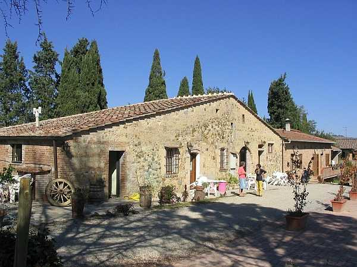

Davanti al fabbricato originale descritto, venne edificato in tempi più recenti, forse a fine Settecento, un altro edificio per accogliere una famiglia di salariati - logaioli ai quali venivano concessi piccoli appezzamenti di terreno da coltivare. Nel 1841 il detto fabbricato risulta podere e successivamente luogo e pigione per divenire definitivamente podere alla fine del secolo. Anche questo edificio con facciata a capanna sbassata presenta numerosi rimaneggiamenti e prima della seconda guerra è stato prolungato verso levante con una moderna costruzione con paramento in cotto.
La strada da percorrere oggi per raggiungere la Magione da Siena passa da Quercegrossa e giunta al Molino prende il bivio a sinistra e dopo un chilometro circa di strada sterrata, appena passato il ponticello sul borro, devia ancora a sinistra e affronta la dura pendenza che immette nel falsopiano della Magione, in un susseguirsi di campi olivati, e vitati. Una splendida collina naturale che si erge sui piani del Selvolini e della Staggia dalla quale la vista spazia verso le alture delle Gallozzole e del Castello di Quercegrossa. Dalla Magione la strada continua per Gardina. Nel 1825 al catasto leopoldino viene iscritto il podere con le seguenti caratteristiche: Casa della Cura di Quercegrossa; Casa colonica; Capanna; Casa colonica. La particella 262 è descritta come
"lavorativo, vitato e olivato della Cura di Quercegrossa" ed è il campo che resterà alla parrocchia fino al 1967. Antica la costruzione del podere come antica deve essere la proprietà degli Ugurgieri, la potente famiglia senese, che risulta possedere la Magione nel Cinquecento. Alla fine del secolo è padrone Cesare Ugurgieri
"dell’Amagione", che in altro coevo documento in latino è citato come
“predio Mansionis ecc:is D. Caesar Ugurgieri”. Nel 1663 è proprietario Hiacinto, della stessa famiglia. A questo punto, verso il 1700, avviene la cessione a un certo Domenico Francescuoli, padrone o forse affittuario. A fine Settecento risulta proprietario Clemente Vannini, proprietario anche del Castellare, e sarà il Vannini a cedere il podere della Magione a Giovan Federigo Andreucci il 10 ottobre 1805 al prezzo di 7650 scudi ossia franchi 44.982. Il medesimo, nel 1807, cede una parte dell’antico edificio e parte delle terre alla Chiesa di Quercegrossa al tempo del parroco Bianciardi. La divisione del podere si protrarrà fino al 1842 quando il nuovo parroco Pratesi, non ritenendone vantaggioso il possesso, lo rivende agli Andreucci Filippo, Ferdinando, cav. Lodovico e Angiolo di Giovan Francesco, riunificando la proprietà. Nel 1874 muore Filippo e gli subentra nella proprietà la sorella Clelia. Quattordici anni dopo, nel 1888, per la morte di Ferdinando, per successione ereditano Lodovico di Giovanni Francesco per ½, e Andreucci Alberto, Emilia e Isabella del fu Ferdinando l’altra metà, con Alberto come erede universale e le sorelle come legittimarie su detto 1/2. Non passano tre anni che Alberto diviene, ancora per successione, l’unico padrone della Magione e alla sua morte, il 4 settembre 1895, eredita il figlio Ferdinando con Giulia Tassi, la vedova, usufruttuaria per ¼. Nel 1907, dopo un secolo esatto di possesso, l’Andreucci vende a Barucci Anacleto fu Luigi. Abbiamo poi il 15 luglio 1918 la vedova di Anacleto, Carmela Arrigucci, ereditare il podere e poco dopo alla di lei morte avvenuta nel 1922 sono padroni unici i figli Enrico e Gino Barucci. Infine il 31 dicembre 1934 per compra passa tutto a Soldatini Cesare fu Sabatino. Con il Soldatini la Magione ospita contemporaneamente anche quattro famiglie e tutte a mezzadria; nel 1946 è registrata Magione I, II, III e IV. Poi, dopo trent’anni di padronato, il Soldatini cederà i due poderi ai suoi ex coloni Sarchi e Sequi. Al tempo del Sarchi contadino, il suo podere si estendeva per venticinque ettari di cui uno e mezzo di bosco e dava una discreta produzione annua di grano ammontante a circa 300 ql., di vino ne producevano 100 ql. e poi fieno e avena. Nella stalla tenevano un paio di vacche e uno di bovi. Rallevavano quindici pecore e un paio di scrofe; ammazzavano un maiale all’anno. Due carri,
"come quasi tutti i poderi". Prima di acquistarne una propria segavano con la falciatrice che gli prestavano il Sequi o altri contadini. Anche
"per il fieno il Sequi aveva il "ranchino" che lo raccoglieva e ce lo prestava". Rievocando gli antichi mezzadri della Magione troviamo nel 1592 Bastiano d’Antonio e Lorenzo Fontani nel 1598 al tempo degli Ugurgieri. Agnolo Niccolini nel 1611, Rombolo de’ Gambassi con quattordici familiari, Jacomo Pagliantini nel 1663, i Muzzi con tredici persone nel 1698, e i Righi nel 1726. Nell’Ottocento tante famiglie prima dell’arrivo dei Landi, e poi i Meli nel secondo podere a fine secolo. Il Novecento vede ancora i Meli, poi i Carletti, Grassi, Ficalbi, Florindi, Tozzi, Angiolini, Sodini e per concludere le rammentate famiglie Sarchi e Sequi che ancor oggi vi dimorano.
La capanna
La costruzione attigua all'antico edificio dimora del contadino o pigionale della parrocchia nell'Ottocento
Veduta dalla Magione verso Quercegrossa
Capitolo successivo Monastero
Inizio pagina
Vai all'Indice dei Capitoli